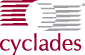

Sponsors
The following companies have donated valuable resources to
perl.org.
We encourage you to support them.
|
|
Provides funding, support, and hardware. We couldn't have done this without them. |
|
|
Provides reliable bandwidth. Their NOC answers the phone on the first ring. Downtime? What's that? |

|
IX2 provides colocation services in Los Angeles. Nice people, great service, good location. We are very happy to call their place home. |
| BizRate uses perl for almost everything. They gave us some really nice hardware very quickly when we needed it the most; thanks! | |
|
|
Most of our systems are running RedHat Linux. With RedHat Network Enterprise it's almost too easy to manage them. |
| YellowBot/Solfo are providing us hardware and other infrastructure resources. | |
| Thalasar donated a blade server. It's just like they gave us 8 computers! (Plus, it's really fun to experiment with.) | |
| Penguin makes really nice machines, and gave us a very good price on some new hardware. | |
|  | We use a wonderful AlterPath ACS terminal server and AlterPath PM power distribution units. Doing kernel upgrades and tweaking firewall rules remotely is all fun and games now. You have no idea how many features a terminal server can have until you read the ACS reference guide. |
|
|
For custom development, logistics and coordination. |
|
|
NodeWorks tells us when our links go bad. Try it, it'll find bad links on your site too. |
|
|
We couldn't keep track of anything without Request Tracker. |
|
|
O'Reilly publishes great perl books, and associated the camel with perl. |
|
|
ValueClick hosted our equipment for many years, and gave us onion, one of our most important servers. |

|
We got a Coyote Point E350 load balancer to help us keep our services up. Did I mention Coyote Point's support is awesome. |
| VMware gave us their GSX server to help us test operating systems, seperate more of our services for security and easier management. It's great. Now it's called "VMWare Server" and is free for everyone! | |
|
We have a wishlist if you want to help us. You can also donate money to The Perl Foundation. Please add a comment to your donation about supporting the perl.org infrastructure. Your donation (money or hardware) is tax deductible. TPF is a non-profit, 501(c)(3) organization. If you are outside the US, please check with your accountant. |
|
Technology
| We use Perl. (Duh!) |

|
| This site is powereed by Combust! |

|
| Built with Template Toolkit |
![[Template Toolkit Logo]](images/friends/template-toolkit.gif)
|